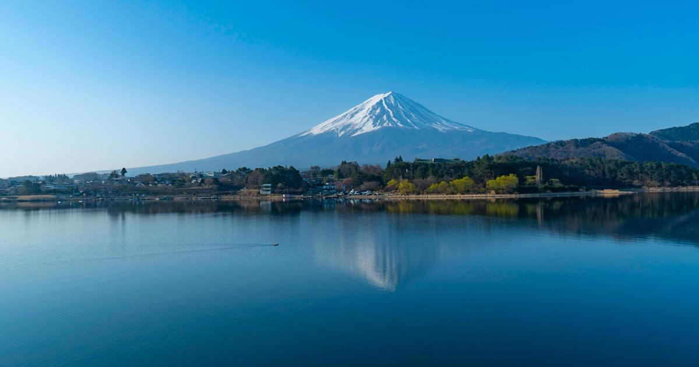
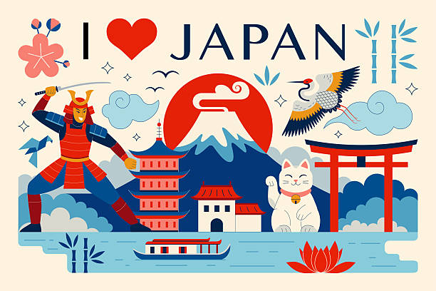
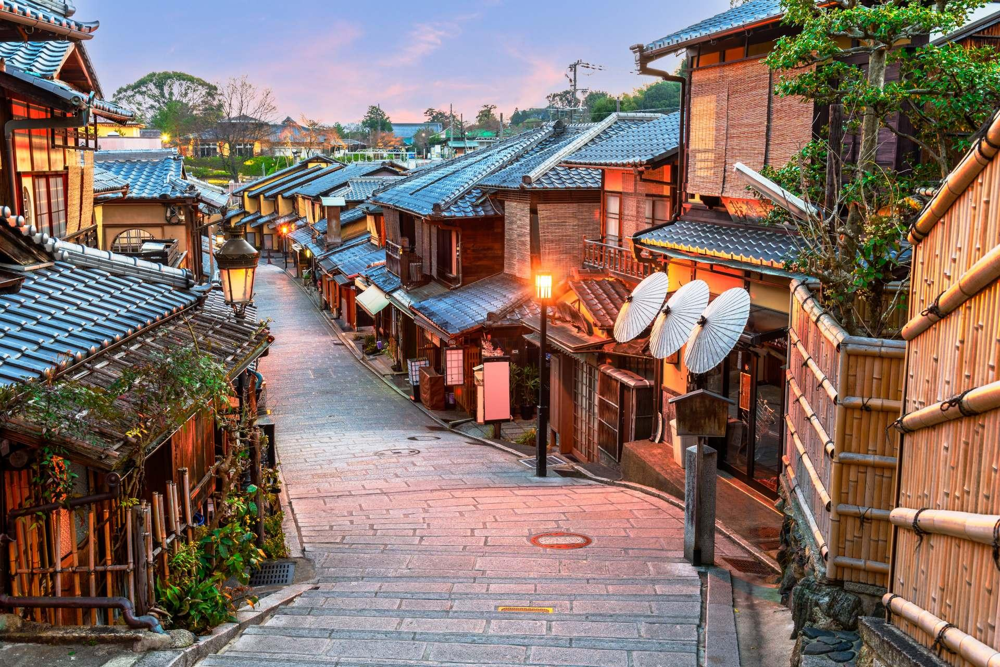
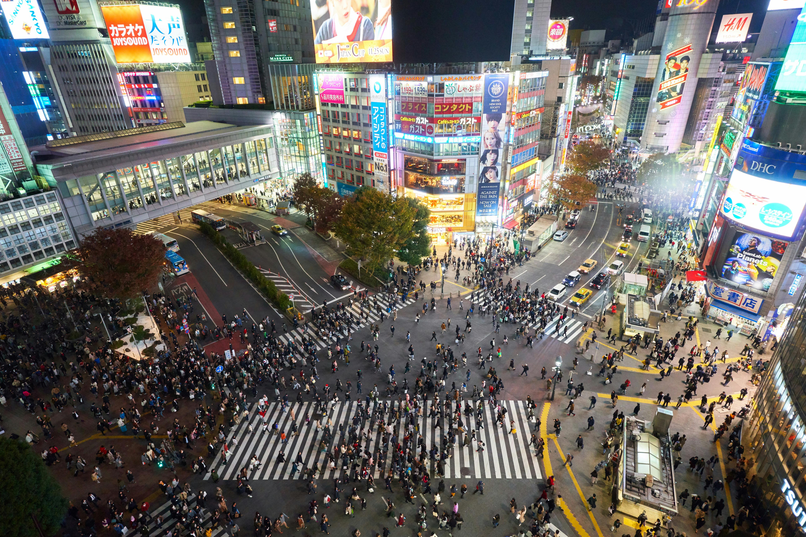
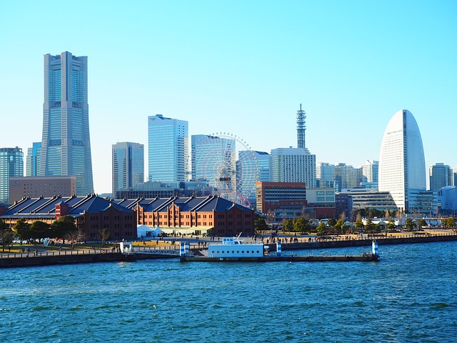

1. Mount Fuji

Mount Fuji is one of Japan's most famous landmarks. Its beautiful mountain views attract visitors from around the world.
Location: Yamanashi and Shizuoka
Learn More About Mount FujiWelcome to my travel blog! Join me as I explore beautiful places in Japan.

I love traveling, photography, and exploring new places. Through this blog, I share travel experiences, beautiful destinations, and useful tips for exploring Japan.

Mount Fuji is one of Japan's most famous landmarks. Its beautiful mountain views attract visitors from around the world.
Location: Yamanashi and Shizuoka
Learn More About Mount Fuji
Kyoto is famous for its traditional temples, historic streets, and beautiful gardens.
Location: Kyoto, Japan
Learn More About Kyoto
Tokyo is a vibrant city with modern buildings, shopping districts, technology, and delicious food.
Location: Tokyo, Japan
Learn More About Tokyo
Yokohama is a modern and exciting city where traditional Japanese culture meets technology, shopping, food, and entertainment.
Learn More about YokohamaLocation: Yokohama, Japan
Have a travel suggestion? Feel free to contact me.
Email: mehedilipu@gmail.com
GitHub: My GitHub Profile